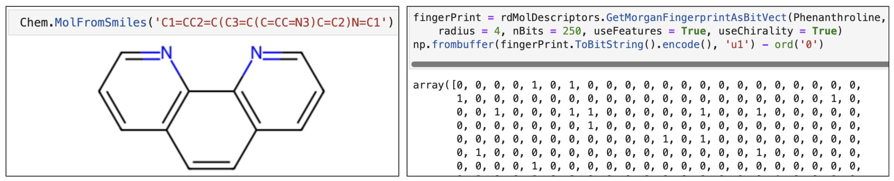
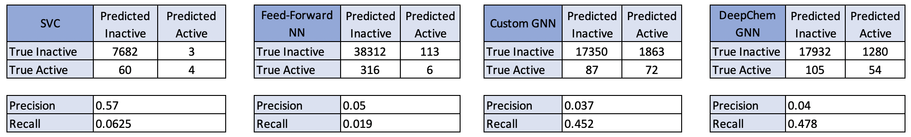

The use of neural networks to predict novel treatments of disease is
widespread, and includes many areas of medicine and disease.
Alzheimer's Disease is a well known disease that impacts the lives
of many people. The amyloid peptides play a large role in the pathogenesis of the
disease,largely related to their dysfunction [1]. Although
the Disease impacts such a large population,
little is known about the underlying biological mechanism as a
whole, and thus treatments are limited.
In 2020, Collins and colleagues [2]
were able to utilize graph convolutions to produce trainable
molecular features for use in their neural networks.
These trainable features were then fed into a feed-forward neural
network to predict the binary outcome; if the compund
would act as an antibiotic towards E. coli. This new utilization of
graph neural networks to train molecular features led to
the discovery of a novel antibiotic, one that was structurally
unique to other antibiotics. The proposed project for this course
involves the reproduction and alteration of Collins work with
antibiotics to predict novel compounds which may be effective in the
treatment of
Alzheimer's Disease, via interaction with the amyloid peptide.
We decided to work with graphs becuase molecular structure
resembles a graph such that the atoms are
represented by nodes and bonds are represented by edges.
The features of a atoms like atom type, and bond type are
represented in a matrix format. The matrices are stored as node embedding. The drug
discovery process requires finding similarity in the structure of the molecule. This is
accomplished by message passing functionality. Each node embedding is multiplied by its neighbor
node embedding. The number
of neighbors a node can gather knowledge is defined in the filters
similar to image convolution
layers and hence the name graph convolution layers. The
functionality of filter multiplication
is described in below figure.
The matrix in the right represent the laplacian of the adjacency
matrix. It can be
used to create polynomials of the form:
Above polynomial is similar to filter's in CNN's.
We can make the polynomial of degree 1 and see how the nodes
combines it's
node embedding with its neighbors as shown below. Increasing the
degree will
increase the length of edges covered by a node.
The update of node embedding after each iteration is described
below.
As shown in the right figure, h represents the node embedding. It is
updated k times which is the
number of hidden layers. At each layers, the laplacian polynomials
representing the weights of
the filters is multiplied with the hidden feature representation to
update the node embedding g.
A sigmoid functions is then applied to each node embedding to get
non-linearity.
The final output from graph neural network is flatten and passed
through a feed forward network
for classification.
Compound and training data was collected from the PubChem Online
Database. PubChem comtains chemical information
for more than 9 billion compounds and the results of thousands of
experiments performed in labs across the world. For
this analysis, we used experimental data from PubChem Bioassay 1285
[3].
This assay evaluated 193,771 compounds
in their ability to inhibit levels of Amyloid Precursor Protein (APP).
Of these 193,771 compounds, we were able to use the
PubChem compound database to extract relevant chemical information
(SMILES) for each of the compounds.
For the nomination data, chemical information for 10,000 compounds
were downloaded from the ChEMBL database,
another well known chemical library. The purpose of the nomination set
is to nominate new compounds that have yet to be
tested in a lab for their ability to reduce levels of the protein. For
this reason the 10,000 compounds chosen were
confirmed to not exist in the 193,771 compounds included in the
original data.
Simple feed forward network requires input in the format of a matrix. So we have used API from RDKit library. It takes as input a SMILES string and provides an object of molecular structure. The object is transformed into vector format by method rdMolDescriptors.GetMorganFingerprintAsBitVect of RDKit library. This output is called morgan fingerprint.
Contrary to this, graph neural network works with one hot encoding matrices of atom type, bond type and features like chirality, electrical charge of molecules. An example of a node object in our libraries would like similar to this: Data(x=[25, 79], edge_index=[2, 54], edge_attr=[54, 10], y=[1]. In this example, x is the node index, edge index and edge attribute are edge index, and y is activity label (1), indicating the compound inhibits the level of APP. The figure to the right represents molecular object, its finger print representation, adjacency matrix and feature matrices.
DeepChem is a Python library/framework that is often used in the
Deep Learning and Chemistry fields.
The framework has integrated many deep learning models and
functionalities from both PyTorch and TensorFlow.
Following the extraction of standard chemical data from PubChem,
graph representations of the molecules were
needed to pass into our Graph Neural Network models. DeepChem
provides a function, ConvMolFeaturizer()
which easily converts approriately formatted graph representations
by passing in SMILES representations of each
compound into the function.
Due to the nature of drug discovery, the large majority of compounds
evaluated for activity on proteins
do not show any activity or impact on levels of the protein. This
leads to a highly imbalanced dataset.
In order to account for this, prior to training our models we used
the DeepChem function BalancingTransformer()
to minimize the impact of class imbalance on classification tasks.
The BalancingTransformer function
accomplishes this by balancing the class weights of both classes, to
ensure similar impact on model training from
both classes.
The data was split into training, validation, and test sets in a
80:10:10 ratio. Only 0.89% of tested compounds
showed activity against the Amyloid Precursor Protein, thus we split
the data using the RandomStratifiedSplitter()
function within DeepChem. This ensured the training, validation, and
test set had equally proportional data in terms of
class balance.
Aside from the SVC model, we evaluated three different deep learning models using the listed optimization parameters:
The confusion matrix for each of our tuned models after passing our test data through the models is below. It should be noted that SVC was only able to be run on a subset of the data because of the time taken to train the model. Aside from the SVC, each of the models predicted a considerable number of drugs to be active relative to the true number of compounds. The DeepChem Graph Neural Network however appeared to perform the best when considering the pros and cons of the precision and recall metrics.

As our Graph Neural Network using the DeepChem library provided the best results
according to our needs, we wanted to use an untested library (nomination set) of compounds to evaluate
'new' potential drugs that could be tested in-lab. In the biotech industry, this is the
case when you are hoping to develop new drugs.
Out of the 10,000 drugs in our nomination set, after creating graph representations and passing
them through our trained DeepChem model, 1,366 compounds were predicted as active against the Amyloid
Precursor Protein. Although this number is more than we would have liked, we used our knowledge
of drug development and biology to further refine these drug nominations and rank them according to
various metrics. We will not go into detail, however there is a guideline in the drug development industry
that if a compound violates more than one property out of 5 pre-defined properties, there is a good chance
the drug will not work in humans [4]. Therefore we filtered out compounds that violated any of these 5 assumptions
and subsequently ranked them by another drug-nomination metric (QED) [5]. After this procedure we
have come up with three new compounds that we are 'nominating' to be explored as novel drugs in the
reduction of Amyloid Precursor Protein with the goal of reducing symptoms of Alzheimer's Disease.
* All chemical images retrieved from PubChem.
[1] Bloom GS. Amyloid-β and tau: the trigger and bullet in Alzheimer disease pathogenesis. JAMA Neurol.
2014 Apr;71(4):505-8. doi: 10.1001/jamaneurol.2013.5847. PMID: 24493463.
[2] Stokes, J.M., Yang, K..., Collins, J. (2020).
A Deep Learning Approach to Antibiotic Discovery, Cell, 180:4, 688-702.
[3] National Center for Biotechnology Information (2022). PubChem Bioassay Record for AID 1285, Source: Columbia University Molecular
Screening Center. Retrieved December 13, 2022 from https://pubchem.ncbi.nlm.nih.gov/bioassay/1285
[4] Kenakin, Terry P. (2017). Chapter 11 - Pharmacology in Drug Discovery
and Development (Second Edition), Pages 275-299, ISBN: 9780128037522.
[5] Bickerton GR, Paolini GV, Besnard J, Muresan S, Hopkins AL. Quantifying the chemical beauty of
drugs. Nat Chem. 2012 Jan 24;4(2):90-8. doi: 10.1038/nchem.1243. PMID: 22270643; PMCID: PMC3524573.
Afsar Equebal and Hendrik Ombach.